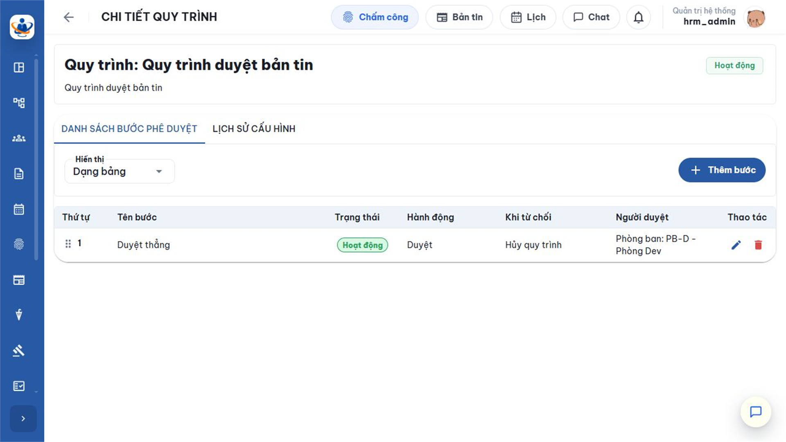
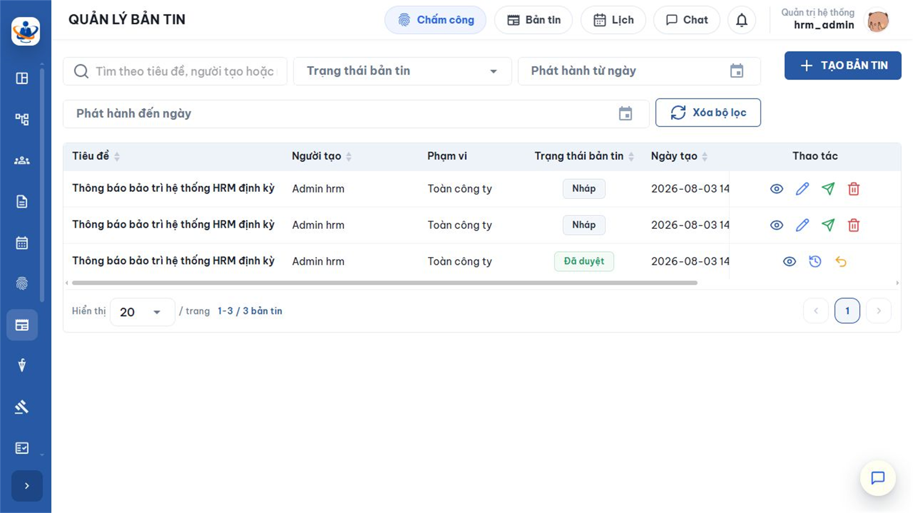
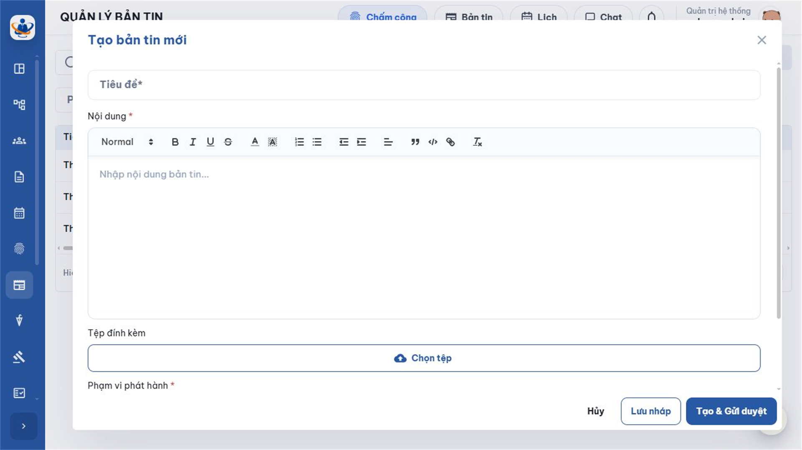
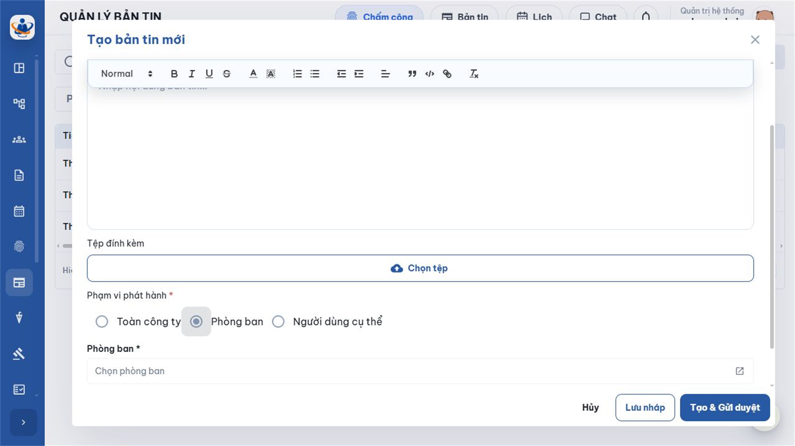
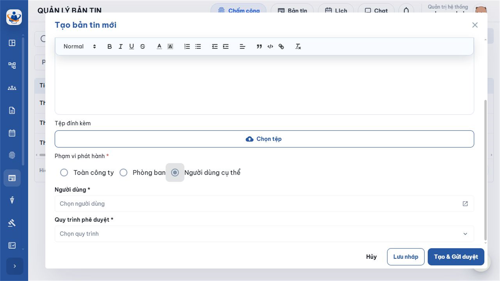

1. Mục đích, phạm vi và luồng tạo bản tin
Chức năng Tạo bản tin dùng để chuẩn bị một thông báo nội bộ có nội dung chuẩn, xác định đúng người nhận và đưa nội dung vào quy trình kiểm soát trước khi phát hành. Người tạo có thể lưu ở trạng thái Nháp để tiếp tục hoàn thiện hoặc tạo và gửi duyệt ngay. Bản tin chỉ xuất hiện với người nhận sau khi toàn bộ quy trình phê duyệt hoàn tất.
Tài liệu này phản ánh giao diện VIN-HRM đang vận hành. Phần mềm hiện tại có trạng thái Nháp và cho người tạo chọn trực tiếp một quy trình phê duyệt đang hoạt động; đây là điểm cần lưu ý khi đối chiếu với đặc tả nghiệp vụ ban đầu vốn mô tả quy trình được lấy tự động từ cấu hình.
1.1. Luồng nghiệp vụ tổng quát
| 1. Chuẩn bị thông tin Xác định mục tiêu, tiêu đề, nội dung, tệp đính kèm và nhóm người cần nhận. |
| ↓ |
| 2. Mở Tạo bản tin Bản tin nội bộ → Quản lý bản tin → TẠO BẢN TIN; hoặc mở Bản tin và chọn ô chia sẻ. |
| ↓ |
| 3. Nhập nội dung và phạm vi Tiêu đề → nội dung → tệp → một loại phạm vi → đối tượng chi tiết → quy trình. |
| ↓ |
| 4. Chọn cách lưu Lưu nháp để tiếp tục sửa HOẶC Tạo & Gửi duyệt để khởi tạo quy trình ngay. |
| ↓ |
| 5. Phê duyệt Người duyệt xử lý theo từng bước; trong thời gian này bản tin chưa hiển thị cho người nhận. |
| ↓ |
| 6. Phát hành Hoàn tất quy trình → chốt danh sách người nhận → ghi thời gian phát hành → hiển thị trên Bản tin nội bộ. |
| LƯU NHÁP ↓ Được sửa, xóa, đổi phạm vi và gửi duyệt sau | HOẶC | TẠO & GỬI DUYỆT ↓ Chuyển sang Chờ duyệt và khóa chỉnh sửa |
1.2. Phạm vi dữ liệu và nguyên tắc
- Mỗi bản tin thuộc đúng doanh nghiệp của người đang đăng nhập; không chọn phòng ban, nhân viên hoặc quy trình của doanh nghiệp khác.
- Người tạo được hệ thống xác định tự động, không nhập tay và chỉ người tạo mới được sửa, gửi duyệt, xóa Nháp hoặc thu hồi yêu cầu duyệt của bản tin đó.
- Mỗi bản tin chỉ dùng một loại phạm vi: Toàn công ty, Phòng ban hoặc Người dùng cụ thể.
- Danh sách người nhận chỉ được chốt khi bản tin được duyệt; thay đổi tổ chức sau thời điểm đó không sửa lại lịch sử người đã nhận.
- Nội dung rich text được làm sạch trước khi lưu; mã thực thi, script hoặc nội dung không an toàn bị loại bỏ.
2. Điều kiện, phân quyền và cấu hình liên quan
2.1. Điều kiện sử dụng
- Tài khoản đăng nhập và hồ sơ nhân viên còn hoạt động trong doanh nghiệp.
- Tài khoản có quyền News.Manage — tên hiển thị trong Phân quyền là Quản lý bản tin.
- Doanh nghiệp có ít nhất một quy trình loại Duyệt bản tin đang hoạt động và có bước phê duyệt hợp lệ.
- Người duyệt được khai báo tại bước đầu tiên phải còn hoạt động; nếu không, hệ thống không thể khởi tạo quy trình.
- Phòng ban hoặc người dùng được chọn phải đang hoạt động và thuộc cùng doanh nghiệp.
2.2. Quy trình phê duyệt là cấu hình bắt buộc
Quản trị có quyền mở Hệ thống > Quy trình phê duyệt, tạo quy trình với Loại quy trình = Duyệt bản tin, thêm các bước và kích hoạt. Trong biểu mẫu bản tin, danh sách Quy trình phê duyệt chỉ trả về các quy trình cùng loại đang hoạt động.

| Thành phần cấu hình | Ý nghĩa | Lưu ý khi dùng cho Bản tin |
|---|---|---|
| Loại quy trình | Xác định module sử dụng quy trình. | Phải là Duyệt bản tin. Quy trình của Hợp đồng, Nghỉ phép hoặc module khác không xuất hiện trong ô chọn. |
| Trạng thái | Hoạt động hoặc Ngừng hoạt động. | Chỉ quy trình Hoạt động được chọn và được dùng để khởi tạo phiên xử lý mới. |
| Bước phê duyệt | Tên bước, thứ tự và người duyệt. | Bản tin hiện chỉ hỗ trợ hành động Duyệt; không chọn quy trình có bước ký điện tử, ký số hoặc upload tài liệu. |
| Người duyệt | Cá nhân, phòng ban, chức vụ hoặc đối tượng theo thiết kế bước. | Người thỏa điều kiện bước mới thấy hồ sơ tại Duyệt bản tin. Cấp quyền News.Approve nhưng không thuộc bước hiện tại thì vẫn không xử lý được. |
| Khi từ chối | Hủy quy trình hoặc trả về bước đã cấu hình. | Quyết định trạng thái và hướng đi tiếp theo. Cần kiểm tra kỹ trước khi đưa quy trình vào sử dụng. |
| Không có công tắc Bật/Tắt Bản tin riêng Trong phiên bản đang chạy, chức năng Tạo bản tin phụ thuộc quyền News.Manage, dữ liệu tổ chức, dịch vụ tệp và quy trình Duyệt bản tin. Ô quy trình trên biểu mẫu là bắt buộc. Nếu danh sách trống, cần kiểm tra loại quy trình, trạng thái Hoạt động, các bước và người duyệt; không phải lỗi của ô nhập bản tin. |
3. Màn hình Quản lý bản tin
Mở Bản tin nội bộ > Quản lý bản tin. Màn hình dùng để tìm, theo dõi và thao tác với tất cả bản tin trong phạm vi quyền của doanh nghiệp.

| Khu vực | Cách sử dụng |
|---|---|
| Tìm kiếm | Nhập tiêu đề, tên người tạo hoặc mã nhân viên. Kết quả tự tải lại theo từ khóa. |
| Trạng thái bản tin | Lọc theo Nháp, Chờ duyệt, Đã duyệt, Đã thu hồi hoặc Bị từ chối. |
| Phát hành từ/đến ngày | Lọc theo ngày phát hành. Bản tin Nháp hoặc Chờ duyệt chưa có ngày phát hành nên không phù hợp khi đặt khoảng ngày này. |
| Xóa bộ lọc | Xóa toàn bộ điều kiện và tải lại trang đầu tiên. |
| TẠO BẢN TIN | Mở biểu mẫu tạo; chỉ hiển thị với tài khoản có News.Manage. |
| Thao tác theo dòng | Xem chi tiết; xem quy trình; cập nhật Nháp; gửi duyệt; xóa Nháp; thu hồi hồ sơ đang Chờ duyệt; hoặc yêu cầu thu hồi bản tin Đã duyệt khi đủ điều kiện. |
4. Giải thích biểu mẫu tạo bản tin
4.1. Mở biểu mẫu
- Từ Quản lý bản tin, chọn TẠO BẢN TIN; hoặc mở Bản tin trên thanh đầu trang rồi chọn ô “Bạn muốn chia sẻ bản tin gì?”.
- Chờ biểu mẫu tải xong. Nếu có thông báo lỗi, đóng biểu mẫu, kiểm tra quyền/kết nối và mở lại.
- Nhập lần lượt từ trên xuống để tránh bỏ sót trường bắt buộc.

4.2. Ý nghĩa các trường
| Trường | Bắt buộc | Ý nghĩa và cách nhập |
|---|---|---|
| Tiêu đề | Có | Tên hiển thị nổi bật trên danh sách và thẻ bản tin; tối đa 500 ký tự. Nên nêu loại thông báo, nội dung chính và mốc quan trọng, ví dụ “Thông báo lịch nghỉ lễ Quốc khánh”. |
| Nội dung | Có | Thông tin chi tiết ở dạng rich text. Hệ thống loại bỏ nội dung rỗng và mã không an toàn. Nên trình bày mở đầu, nội dung chính, thời gian/phạm vi áp dụng, việc nhân viên cần làm và đầu mối liên hệ. |
| Tệp đính kèm | Không | Thêm ảnh hoặc tài liệu cần xem/tải. Có thể chọn nhiều tệp; tệp được kiểm tra theo dịch vụ lưu trữ của hệ thống. Không đưa dữ liệu nhạy cảm nếu phạm vi phát hành rộng. |
| Phạm vi phát hành | Có | Chọn đúng một trong ba lựa chọn. Phạm vi quyết định cách hệ thống chốt người nhận sau khi duyệt. |
| Phòng ban | Có điều kiện | Chỉ xuất hiện khi chọn Phòng ban; phải chọn ít nhất một đơn vị đang hoạt động. Chọn phòng ban cha không mặc nhiên bao gồm phòng ban con, vì vậy cần chọn đủ từng đơn vị cần nhận. |
| Người dùng | Có điều kiện | Chỉ xuất hiện khi chọn Người dùng cụ thể; phải chọn ít nhất một nhân viên đang hoạt động, có tài khoản hoạt động trong doanh nghiệp. |
| Quy trình phê duyệt | Có | Chọn quy trình loại Duyệt bản tin đang hoạt động. Quy trình này quyết định số bước, người xử lý và đường đi khi từ chối. |
4.3. Các nút trên trình soạn thảo
| Nhóm công cụ | Ý nghĩa |
|---|---|
| Normal / Heading 2 / Heading 3 | Đặt kiểu đoạn văn hoặc tiêu đề cấp nhỏ trong nội dung. Không dùng quá nhiều tiêu đề khiến bản tin rối mắt. |
| Đậm, nghiêng, gạch chân, gạch ngang | Nhấn mạnh từ hoặc câu. Ưu tiên chữ đậm cho thông tin quan trọng; tránh gạch chân nếu không phải liên kết. |
| Màu chữ và màu nền | Làm nổi bật cảnh báo hoặc trạng thái; nên dùng ít màu, bảo đảm dễ đọc. |
| Danh sách số / dấu đầu dòng | Trình bày các bước hoặc nhóm nội dung; dùng danh sách số khi thứ tự thực hiện có ý nghĩa. |
| Giảm / tăng thụt lề | Tạo cấp con của danh sách hoặc điều chỉnh mức lề. |
| Căn lề, trích dẫn, khối mã | Căn đoạn, làm nổi trích dẫn hoặc trình bày nội dung kỹ thuật. Khối mã chỉ dùng khi thật sự cần truyền đạt đoạn cấu hình/mã an toàn. |
| Liên kết / xóa định dạng | Chèn đường dẫn hợp lệ hoặc đưa đoạn văn về định dạng bình thường. |
5. Chọn phạm vi phát hành
5.1. Ý nghĩa từng lựa chọn
| Lựa chọn | Hệ thống xác định người nhận | Khi nên dùng và lưu ý |
|---|---|---|
| Toàn công ty | Tất cả nhân viên đang hoạt động thuộc doanh nghiệp và có tài khoản hoạt động tại thời điểm phát hành. | Thông báo chung như nghỉ lễ, chính sách toàn doanh nghiệp, bảo trì hệ thống. Cần rà soát kỹ nội dung và tệp vì phạm vi rộng nhất. |
| Phòng ban | Nhân viên có thông tin công việc hiệu lực tại một trong các phòng ban được chọn, còn hoạt động và có tài khoản. | Nội dung chuyên môn hoặc áp dụng theo đơn vị. Nếu một người thuộc nhiều phòng ban được chọn, hệ thống chỉ tạo một bản ghi người nhận. |
| Người dùng cụ thể | Những nhân viên được chọn trực tiếp và vẫn còn hoạt động tại thời điểm phát hành. | Thư mời, thông báo cho nhóm quản lý hoặc danh sách giới hạn. Kiểm tra mã nhân viên, phòng ban và email để tránh chọn nhầm người trùng tên. |
5.2. Chọn Phòng ban
- Chọn nút tròn Phòng ban.
- Chọn trường Phòng ban *, tìm theo mã hoặc tên và đánh dấu các đơn vị cần nhận.
- Kiểm tra khu vực Phòng ban đã chọn; gỡ các đơn vị không đúng.
- Nếu cần cả phòng ban con, chọn từng phòng ban con thay vì giả định hệ thống tự kế thừa.

5.3. Chọn Người dùng cụ thể
- Chọn nút tròn Người dùng cụ thể.
- Mở trường Người dùng *; tìm theo mã nhân viên, họ tên hoặc email.
- Đánh dấu người nhận; kiểm tra phòng ban đang làm việc trước khi xác nhận.
- Khi đổi từ Phòng ban sang Người dùng hoặc ngược lại, hệ thống xóa danh sách của loại cũ; cần chọn lại đúng phạm vi mới.

| Người tạo không tự động là người nhận Nếu cần xem bản tin sau khi phát hành, người tạo phải thuộc phạm vi Toàn công ty, có công việc tại phòng ban được chọn hoặc được chọn trực tiếp. Danh sách người nhận được chốt tại thời điểm phát hành; nhân viên mới vào phòng ban sau đó không tự nhận bản tin cũ. |
6. Lưu nháp, gửi duyệt và theo dõi trạng thái
6.1. Lưu nháp
- Nhập đủ dữ liệu hợp lệ, kể cả quy trình phê duyệt.
- Chọn Lưu nháp.
- Kiểm tra thông báo thành công và dòng mới có trạng thái Nháp.
- Dùng nút Cập nhật để sửa; dùng Gửi duyệt khi nội dung đã sẵn sàng.
Lưu nháp không phát hành, không tạo phiên quy trình và không gửi thông báo cho người duyệt. Đây là lựa chọn phù hợp khi tệp hoặc phạm vi chưa được rà soát xong.
6.2. Tạo & Gửi duyệt
- Rà soát tiêu đề, nội dung, tệp, phạm vi và quy trình.
- Chọn Tạo & Gửi duyệt hoặc, với dòng Nháp, chọn biểu tượng Gửi duyệt.
- Xác nhận cảnh báo: bản tin chuyển sang Chờ duyệt và không thể chỉnh sửa.
- Hệ thống tạo phiên quy trình, chuyển đến bước đầu tiên và thông báo cho người xử lý phù hợp.
- Theo dõi bằng biểu tượng Quy trình phê duyệt trong cột Thao tác.
6.3. Ý nghĩa trạng thái
| Trạng thái | Ý nghĩa | Thao tác chính |
|---|---|---|
| Nháp | Đã lưu nhưng chưa khởi tạo quy trình; chưa có người nhận. | Xem, cập nhật, gửi duyệt hoặc xóa. |
| Chờ duyệt | Quy trình đang xử lý; chưa hiển thị cho người nhận. | Xem, xem tiến trình; người tạo có thể Thu hồi về Nháp khi quy trình chưa bị từ chối. |
| Đã duyệt | Toàn bộ quy trình hoàn tất, người nhận đã được chốt và bản tin đã phát hành. | Xem; không sửa nội dung hoặc phạm vi. Khi sai phải yêu cầu thu hồi và tạo bản tin mới. |
| Đã thu hồi | Quy trình thu hồi đã hoàn tất; bản tin không còn xuất hiện với người nhận. | Chỉ tra cứu lịch sử ở màn hình quản lý. |
| Bị từ chối | Quy trình phát hành kết thúc do từ chối. | Phiên bản hiện tại không cho sửa trực tiếp trạng thái này; xem lý do và tạo bản tin mới khi cần gửi lại nội dung đã điều chỉnh. |
7. Chỉnh sửa, xóa và thu hồi yêu cầu duyệt
7.1. Cập nhật Nháp
- Tại dòng Nháp do chính mình tạo, chọn biểu tượng Cập nhật.
- Chỉnh tiêu đề, nội dung, tệp, phạm vi, danh sách đối tượng hoặc quy trình.
- Chọn Lưu thay đổi để vẫn ở Nháp hoặc Lưu & Gửi duyệt để khởi tạo quy trình.
7.2. Xóa Nháp
Chọn biểu tượng Xóa và xác nhận. Hệ thống chỉ cho xóa bản tin ở trạng thái Nháp do chính người dùng tạo. Bản tin đã phát sinh quy trình không dùng thao tác xóa này.
7.3. Thu hồi hồ sơ đang Chờ duyệt về Nháp
| Bản tin Chờ duyệt Người tạo phát hiện nội dung hoặc phạm vi cần sửa. |
| ↓ |
| Chọn Thu hồi Xác nhận thu hồi toàn bộ tiến trình phê duyệt hiện tại. |
| ↓ |
| Hệ thống xóa phiên xử lý hiện tại Bản tin trở lại Nháp; danh sách nội dung, phạm vi và tệp được giữ. |
| ↓ |
| Cập nhật và gửi lại Chỉnh sửa → kiểm tra → khởi tạo một phiên phê duyệt mới. |
| Phân biệt hai loại “thu hồi” Thu hồi hồ sơ Chờ duyệt đưa bản tin về Nháp để sửa và xóa tiến trình hiện tại. Yêu cầu thu hồi bản tin Đã duyệt là nghiệp vụ khác, cần lý do và một quy trình phê duyệt thu hồi; bản tin vẫn hiển thị cho người nhận cho đến khi yêu cầu được duyệt. |
8. Lỗi thường gặp và danh sách kiểm tra
8.1. Lỗi thường gặp
| Hiện tượng | Nguyên nhân thường gặp | Cách xử lý |
|---|---|---|
| Không thấy nút TẠO BẢN TIN | Thiếu quyền News.Manage hoặc phiên quyền chưa được cập nhật. | Kiểm tra Phân quyền, đăng xuất/đăng nhập lại sau khi cấp quyền. |
| Không chọn được quy trình | Chưa có quy trình Duyệt bản tin đang Hoạt động hoặc quy trình không có bước hợp lệ. | Mở Hệ thống → Quy trình phê duyệt, kiểm tra Loại, Trạng thái, bước và người duyệt. |
| Không thể lưu/gửi vì nội dung | Tiêu đề hoặc nội dung rỗng; nội dung chỉ có định dạng nhưng không có chữ/ảnh có ý nghĩa. | Nhập lại nội dung thực, bỏ các khối rỗng; tiêu đề không vượt quá 500 ký tự. |
| Báo chưa chọn Phòng ban/Người dùng | Chọn phạm vi có điều kiện nhưng danh sách chi tiết trống. | Mở lại ô chọn và thêm ít nhất một đối tượng hợp lệ. |
| Tệp không tải lên | Định dạng, dung lượng, kết nối hoặc quyền upload không hợp lệ. | Dùng tệp nhỏ hơn, định dạng thông dụng; tải lại biểu mẫu và liên hệ quản trị dịch vụ tệp nếu lỗi lặp lại. |
| Không sửa được bản tin | Không phải người tạo hoặc trạng thái không còn là Nháp. | Nếu đang Chờ duyệt, người tạo dùng Thu hồi về Nháp; nếu Đã duyệt, yêu cầu thu hồi và tạo bản tin mới. |
| Người cần nhận không thấy bản tin | Bản tin chưa được duyệt hoặc người đó không thuộc danh sách chốt tại thời điểm phát hành. | Xem tiến trình phê duyệt; kiểm tra trạng thái nhân viên, tài khoản và thông tin công việc tại thời điểm phát hành. |
8.2. Danh sách kiểm tra trước khi gửi duyệt
- Tiêu đề ngắn gọn, không viết hoa toàn bộ nếu không cần thiết.
- Nội dung có thời gian, phạm vi áp dụng, việc người đọc cần làm và đầu mối liên hệ.
- Liên kết mở được; tệp đúng phiên bản, không chứa dữ liệu ngoài phạm vi.
- Chọn đúng một loại phạm vi và kiểm tra đủ phòng ban/người dùng.
- Quy trình đúng loại, đang hoạt động và người duyệt còn hiệu lực.
- Đã xem lại chính tả, ngày giờ, số liệu và tên đơn vị.
- Nếu chưa chắc chắn, chọn Lưu nháp; chỉ Gửi duyệt khi nội dung đã sẵn sàng phát hành.